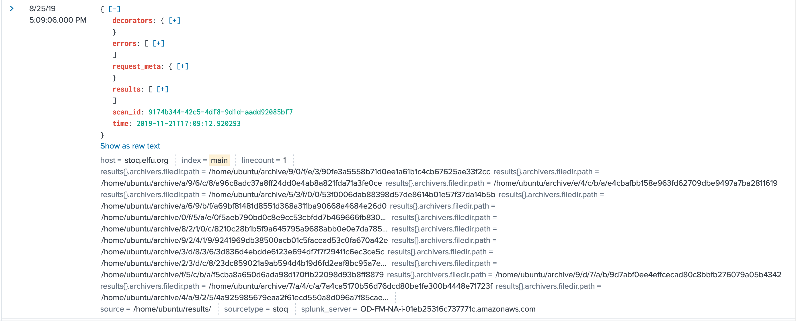

Splunk - The training questions
üéÆ Splunk Training questions¶
üìç The Laboratory
ü뮂Äçüî¨ Dr. Banas
Hi, I'm Dr. Banas, professor of Cheerology at Elf University.
This term, I'm teaching "HOL 404: The Search for Holiday Cheer in Popular Culture," and I've had quite a shock!
I was at home enjoying a nice cup of Gløgg when I had a call from Kent, one of my students who interns at the Elf U SOC. Kent said that my computer has been hacking other computers on campus and that I needed to fix it ASAP!
If I don't, he will have to report the incident to the boss of the SOC.
Apparently, I can find out more information from this website https://splunk.elfu.org/ with the username: elf / Password: elfsocks.
I don't know anything about computer security. Can you please help me?
Watch > Talk by James Brodsky | Dashing Through the Logs
Watch Dashing Through the Logs
If you want your hunt to be successful, you need to look where the threats are. In modern environments, that means collecting endpoint and email logs and knowing what to search for in it. In this talk, we will cover critical Windows-based security event log sources like Sysmon, PowerShell, and process launch events.
Additionally, we will introduce the stoQ automation framework for analyzing email. We’ll show you how to use this data to pragmatically hunt for threats operating in your environment.
Go to https://splunk.elfu.org/ and login with following:
- Username:
elf - Password:
elfsocks
The Search for Holiday Cheer Challenge
-
Your goal is to answer the Challenge Question. You will include the answer to this question in your HHC write-up!
-
You do not need to answer the training questions. You may simply search through the Elf U SOC data to find the answer to the final question on your own.
-
If you need some guidance, answer the training questions! Each one will help you get closer to the answering the Challenge Question.
-
Characters in the SOC Secure Chat are there to help you. If you see a blinking red dot next to a character, click on them and read the chat history to learn what they have to teach you! And don't forget to scroll up in the chat history!
-
To search the SOC data, just click the Search link in the navigation bar in the upper left hand corner of the page.
-
This challenge is best enjoyed on a laptop or desktop computer with screen width of 1600 pixels or more.
-
WARNING This is a defensive challenge. Do not attack this system, web application, or back-end APIs.
Welcome message
‚ö°Ô∏è Solution¶
Let's begin with the Training Questions:
1. What is the short host name of Professor Banas' computer?¶
Let's check Kent chat first because he is the one informed Professor Banas about the hacking:
Chat with Kent
Read the chats very carefully.
Go check out #ELFU SOC as he suggest:
Chat with #ELFU SOC
Easy to find in the #ELFU SOC chat:
We have some system called sweetums here on campus communicating with the same weird IP, that's Professor Banas' system.
Enter sweetums on the right input box next to the question to unlock the next question.
Training Question 1: Correct
sweetums
2. What is the name of the sensitive file that was likely accessed and copied by the attacker?¶
Please provide the fully qualified location of the file. (Example: C:\temp\report.pdf)
Check Alice's chat:
Chat with Alice Bluebird
Chat with Alice Bluebird - After answer question #1
Searching by interesting word
If you have a word that you are really interested in, just start searching for it. Here is an example of searching for the professor's username : Example Link
index=main cbanas
Use that technique (with a different search term) to answer question 2.
Which word to search?
Our very first worry was they may have found some of Santa's sensitive data. Maybe start with his name
Let's follow his instructions & hints:
-
Click here or hit the Search link in the navigation up above to get started.
-
Search using
Santa:index=main santa
-
Lets analysis the results:
-
The attacker accessed
cbanasaccount onsweetums's computer. -
Using
Get-ChildItemcmdlet in Powershell listed all files inC:\Users\cbanas.The resulted files :
- Microsoft Edge.lnk - Naughty_and_Nice_2019_draft.txt - 19th Century Holiday Cheer Assignment.doc - assignment.zip - Bing.url - Desktop.lnk - Downloads.lnk - winrt--{S-1-5-21-1217370868-2414566453-2573080502-1004}-.searchconnector-ms -
Piped the result into
ForEach-Objectcommand to executeSelect-Stringcmdlet for each object returned to search for wordSanta.Select-String -path $_ -pattern Santa
-
He found his target in this file:
C:\Users\cbanas\Documents\Naughty_and_Nice_2019_draft.txt
Then sends a file's contents to the
Out-Stringcmdlet to displays it in the PowerShell console.Carl, you know there's no one I trust more than you to help. Can you have a look at this draft Naughty and Nice list for 2019 and let me know your thoughts? -Santa
-
Also we see the download of the scanning tool, That's interesting:

but let's stay on task here.
-
Training Question 2: Correct
C:\Users\cbanas\Documents\Naughty_and_Nice_2019_draft.txt
3. What is the fully-qualified domain name(FQDN) of the command and control(C2) server?¶
(Example: badguy.baddies.com)
Check Alice's chat:
Chat with Alice Bluebird - After answer question #2
Microsoft Sysmon data
https://www.splunk.com/en_us/blog/security/a-salacious-soliloquy-on-sysmon.html
Search Sysmon data in Splunk
Start by specifying the sourcetype using a search like
sourcetype=XmlWinEventLog:Microsoft-Windows-Sysmon/Operational
In Sysmon, Event Code 3 represents network connections and you can narrow your search by adding the term powershell.
index=main sourcetype=XmlWinEventLog:Microsoft-Windows-Sysmon/Operational powershell EventCode=3
There is an implied boolean AND operator between any search terms that you add. Try to narrow your search to include these terms.
Look through the lists of Interesting Fields and Selected Fields in the left-hand column of the search window.
Given the hints, our search will be:
index=main sourcetype=XmlWinEventLog:Microsoft-Windows-Sysmon/Operational powershell EventCode=3
Then select Interesting Fields under Selected Fields in the left-hand column of the search window:
Training Question 3: Correct
144.202.46.214.vultr.com
4. What document is involved with launching the malicious PowerShell code?¶
Please provide just the filename. (Example: results.txt)
Check Alice's chat:
Chat with Alice Bluebird - After answer question #3
View the PowerShell logs
index=main sourcetype="WinEventLog:Microsoft-Windows-Powershell/Operational"
process ID or process GUID, We can pivot on time.
Flip the results of that last search so the oldest event is at the top of the list by adding | reverse to the end .
Pivot on time.
Look at the Time column in your search results. If you click on the date/timestamp from that first event, you can specify a time window.
Accept the default of ± five seconds and click apply.
Then remove the sourcetype search term and also remove the | reverse and re-run the search.
If Sysmon Event Code 1 results are not available, try looking for Windows Process Execution events (Event ID 4688). A search to get you started with 4688 logs is
sourcetype=WinEventLog EventCode=4688
Keep in mind that 4688 events record process IDs in hexadecimal, so you may need to do some conversion.
Let's start our search:
-
Search for all the PowerShell logs and reverse the results order to get the oldest one:
index=main sourcetype="WinEventLog:Microsoft-Windows-Powershell/Operational" | reverse
-
Pivot on time: Look at the Time column in the search results then click on the date/timestamp from that first event, Accept the default of
+/- five seconds.Then remove the
sourcetypesearch term and also remove the| reverseand re-run the search. -
Click on
process_idon the left panel and you should be able to find two different process IDs from Sysmon events in that time window...Now we have two process id :
6268,5864. -
We need to uncover what launched those processes. Check Sysmon Event Code 1 by clicking
EventCodeon the left panel and select Event Code1: -
The Sysmon Event Code
1results are not leading to anything, Let's try looking for Windows Process Execution events (Event ID4688) as suggested with the process ids we found.First set your time window back to all time:
Go to search bar on the right > Select Date time range > Presets > All time :Then the
4688events record process IDs inhexadecimal, so we need to do some conversion:5864to hex0x16E86268to hex0x187CLet's do the search for each
index=main sourcetype=WinEventLog EventCode=4688 process_id=0x16E8
This one doesn't lead for a "document" that appears to be involved with kicking off all this PowerShell.
Let's try second process id:
index=main sourcetype=WinEventLog EventCode=4688 process_id=0x187C
Process Information: New Process ID: 0x187c New Process Name: C:\Program Files (x86)\Microsoft Office\root\Office16\WINWORD.EXE Token Elevation Type: %%1938 Mandatory Label: Mandatory Label\Medium Mandatory Level Creator Process ID: 0x1748 Creator Process Name: C:\Windows\explorer.exe Process Command Line: "C:\Program Files (x86)\Microsoft Office\Root\Office16\WINWORD.EXE" /n "C:\Windows\Temp\Temp1_Buttercups_HOL404_assignment (002).zip\19th Century Holiday Cheer Assignment.docm" /o ""The file started all this is
19th Century Holiday Cheer Assignment.docmwhich opened in Microsoft Word application.
Training Question 4: Correct
19th Century Holiday Cheer Assignment.docm
5. How many unique email addresses were used to send Holiday Cheer essays to Professor Banas?¶
Please provide the numeric value. (Example: 1)
Check Alice's chat:
Chat with Alice Bluebird - After answer question #4
Example search
index=main sourcetype=stoq | table _time results{}.workers.smtp.to results{}.workers.smtp.from results{}.workers.smtp.subject results{}.workers.smtp.body | sort - _time
All assignment submissions must be made via email and must have the subject 'Holiday Cheer Assignment Submission'
Email addresses are not case sensitive so don't double-count them!.
After viewing the stoQ slides and documentation, We need to find all emails with subject Holiday Cheer Assignment Submission and sent to carl.banas@faculty.elfu.org we noted from example search result.
So our search query will be:
index=main sourcetype=stoq results{}.workers.smtp.subject="Holiday Cheer Assignment Submission" AND results{}.workers.smtp.to = "*carl.banas@faculty.elfu.org*" | table _time results{}.workers.smtp.to results{}.workers.smtp.subject results{}.workers.smtp.from
sourcetype=stoqto use stoQ tool as source.
results{}.workers.smtp.subjectto filter subjec to only "Holiday Cheer Assignment Submission".
results{}.workers.smtp.toto filter sent only to this address "carl.banas@faculty.elfu.org" and adding*to include all results with different letter cases.
tabledisplay results within table with filedstime,receiver,subject,sender
Training Question 5: Correct
We have 21 events!
6. What was the password for the zip archive that contained the suspicious file?¶
Check Alice's chat:
Chat with Alice Bluebird - After answer question #5
MITRE ATT&CK Technique 1193
Just use what you already know about the suspicious file name you identified, and about the type of visibility that stoQ gives you.
Given the hints we will search for suspicious file name 19th Century Holiday Cheer Assignment.docm in the emails sent to Prof Carl:
index=main sourcetype=stoq "19th Century Holiday Cheer Assignment.docm" results{}.workers.smtp.to = "*carl.banas@faculty.elfu.org*" | table _time results{}.workers.smtp.from results{}.workers.smtp.subject results{}.workers.smtp.body
results{}.workers.smtp.bodyto return body of the email.
Professor Banas, I have completed my assignment. Please open the attached zip file with password 123456789 and then open the word document to view it. You will have to click "Enable Editing" then "Enable Content" to see it. This was a fun assignment. I hope you like it! --Bradly Buttercups
Training Question 5: Correct
The password is 123456789.
7. What email address did the suspicious file come from?¶
Chat with Alice Bluebird - After answer question #6
We know the answer from pervious results because we used results{}.workers.smtp.from in our search query output.
Simply use it as following:
index=main sourcetype=stoq "19th Century Holiday Cheer Assignment.docm" | table _time results{}.workers.smtp.from
Training Question 5: Correct
The password is bradly.buttercups@eifu.org.
üéì What you've learned¶
- Using splunk search query by
word,sourcetype,EventCode,process_idand how to look forInteresting Fields. - Windows Process Execution events (Event ID
4688for new process created) - Sysmon Event id
1for Process creation. - Reverse the results order and Pivot on time.
- The
4688events record process IDs inhexadecimal. - Using
stoQtool to search emails.